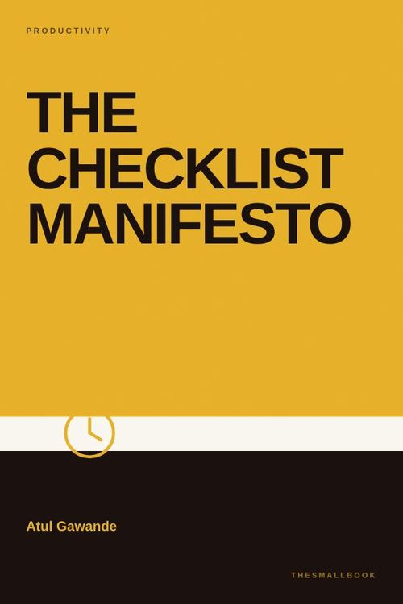

Why Did Therac-25 Fail?
The Software Bug That Killed Four Patients - and Taught Medicine About Checklists
📜 What Happened
The Therac-25 was a radiation therapy machine that seemed safer than its predecessors because its safety was implemented in software instead of hardware interlocks. But when the software hit a rare race condition, the machine delivered massive overdoses of radiation - silently, and repeatedly. Over two years, six patients were over-irradiated; four died. The horrifying part: the machine's logs showed 'no malfunction' even as patients screamed - because the software recorded normal operation while the hardware delivered death. The investigation found a system designed by brilliance and tested by assumption, with no independent verification and no checklists.
☠️ The Fatal Mistake
Trusting complex software without layers of redundant human and hardware checks - genius engineers assumed what a simple checklist would have caught.
🧠 The Lesson (Free for You)
Complexity exceeds any single expert's memory - even brilliant ones. The aviation industry knew this for decades; medicine learned it the hard way. Critical systems need checklists, verification and the humility to assume you missed something.
The Antidote Book

Surgeon Atul Gawande asked a strange question: why do experts still fail at complex tasks, from surgery to skyscrapers to airplane crashes? His answer: modern complexity exceeds any single human's memory - the failures…
📖 OPEN THE FULL INTERACTIVE BREAKDOWN →Questions people ask about Therac-25
Why did Therac-25 fail? Trusting complex software without layers of redundant human and hardware checks - genius engineers assumed what a simple checklist would have caught.
How much was lost? 4 patients killed, 2 seriously injured, a technology's trust destroyed
What is the lesson? Complexity exceeds any single expert's memory - even brilliant ones. The aviation industry knew this for decades; medicine learned it the hard way. Critical systems need checklists, verification and the humility to assume you missed something.
Therac-25 kyun fail hua? In simple English: Trusting complex software without layers of redundant human and hardware checks - genius engineers assumed what a simple checklist would have caught. The cost was 4 patients killed, 2 seriously injured, a technology's trust destroyed.
Keep digging
More historical failures · Open the full Graveyard
Read the antidote book summary: The Checklist Manifesto
Related failures
- Why did The Churning of the Ocean fail? ~5000 BCE (epic) · The Great Co-operation That Produced the Poison First
- Why did The Nanda Empire fail? ~321 BCE · The Richest Empire in India, Lost Because the King Couldn't Keep a Promise
- Why did The Kurukshetra War fail? ~3000 BCE (epic) · The War Everyone Wanted That Destroyed Everyone Who Wanted It
- Why did The Harappan Collapse fail? ~1900 BCE · The Advanced Civilization That Vanished Into Its Own Success
- Why did Easter Island fail? ~1600 · They Cut Down the Last Tree
- Why did Qin Shi Huang fail? 210 BC · The Emperor Who Drank Immortality to Death
Questions people ask about Therac-25
Why did Therac-25 fail? Trusting complex software without layers of redundant human and hardware checks - genius engineers assumed what a simple checklist would have caught.
How much was lost? 4 patients killed, 2 seriously injured, a technology's trust destroyed
What is the lesson? Complexity exceeds any single expert's memory - even brilliant ones. The aviation industry knew this for decades; medicine learned it the hard way. Critical systems need checklists, verification and the humility to assume you missed something.
Therac-25 kyun fail hua? In simple English: Trusting complex software without layers of redundant human and hardware checks - genius engineers assumed what a simple checklist would have caught. The cost was 4 patients killed, 2 seriously injured, a technology's trust destroyed.
Keep digging
More historical failures · Open the full Graveyard
Read the antidote book summary: The Checklist Manifesto
Related failures
- Why did The Churning of the Ocean fail? ~5000 BCE (epic) · The Great Co-operation That Produced the Poison First
- Why did The Nanda Empire fail? ~321 BCE · The Richest Empire in India, Lost Because the King Couldn't Keep a Promise
- Why did The Kurukshetra War fail? ~3000 BCE (epic) · The War Everyone Wanted That Destroyed Everyone Who Wanted It
- Why did The Harappan Collapse fail? ~1900 BCE · The Advanced Civilization That Vanished Into Its Own Success
- Why did Easter Island fail? ~1600 · They Cut Down the Last Tree
- Why did Qin Shi Huang fail? 210 BC · The Emperor Who Drank Immortality to Death
Searchable, filterable, simple to read - they paid billions; you get the lesson.